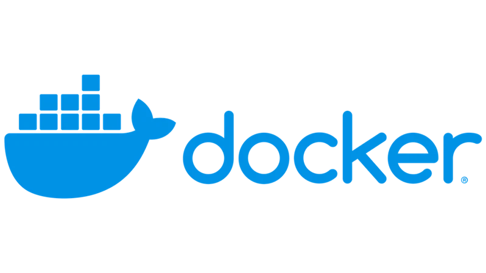

Los contenedores son paquetes de software que incluyen todos los elementos necesarios para que ejecutes tus productos en cualquier entorno. Como virtualizan el sistema operativo, se pueden ejecutar en cualquier parte, desde un centro de datos privado hasta la nube pública o incluso el portátil personal de un desarrollador. Desde Gmail a YouTube, pasando por la Búsqueda, en Google todo se hace en contenedores. La creación de contenedores permite a nuestros equipos de desarrollo moverse con rapidez, desplegar software con eficacia y funcionar a una escala sin precedentes.

Como los contenedores se pueden ejecutar casi en cualquier lugar, resulta facilísimo desarrollarlos y desplegarlos en sistemas operativos Linux, Windows y Mac; en máquinas virtuales o servidores físicos; en equipos de desarrolladores o centros de datos on‑premise; y, por supuesto, en la nube pública.
La creación en contenedores permite separar de forma clara las responsabilidades, ya que los desarrolladores se centran en la lógica y las dependencias de las aplicaciones, mientras que los equipos de operaciones de TI se dedican a desplegarlas y gestionarlas sin preocuparse por detalles concretos, como versiones de software o configuraciones específicas.
Los contenedores virtualizan los recursos de CPU, memoria, almacenamiento y red a nivel de sistema operativo, lo que proporciona a los desarrolladores una vista del sistema operativo aislado lógicamente de las demás aplicaciones.
Los contenedores son adecuados para las cargas de trabajo de procesamiento por lotes, ya que te permiten ejecutar tareas en paralelo y escalar los recursos según sea necesario.